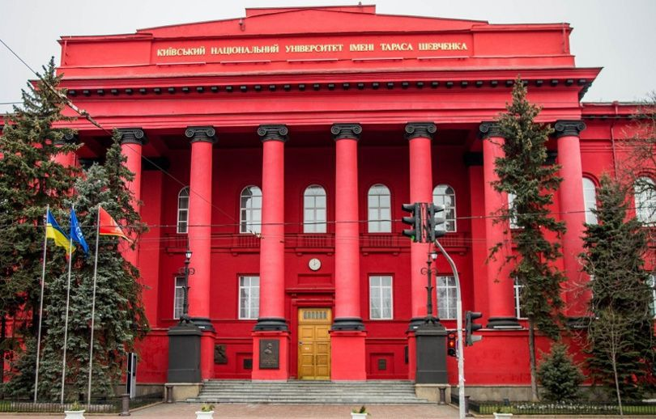
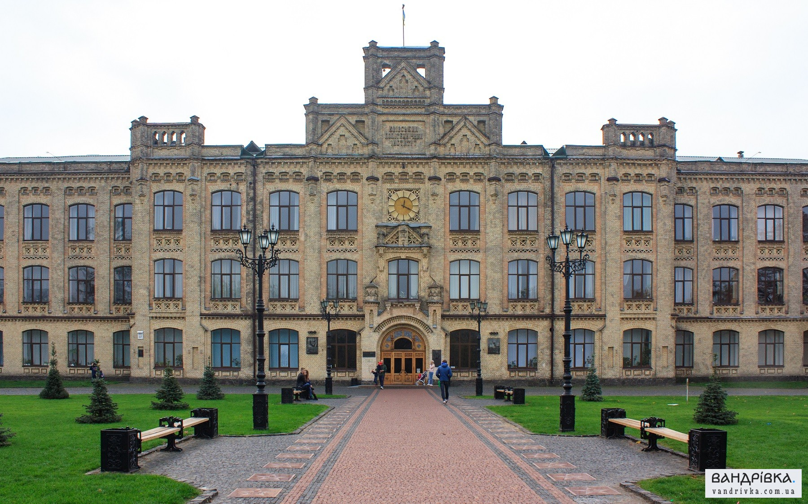
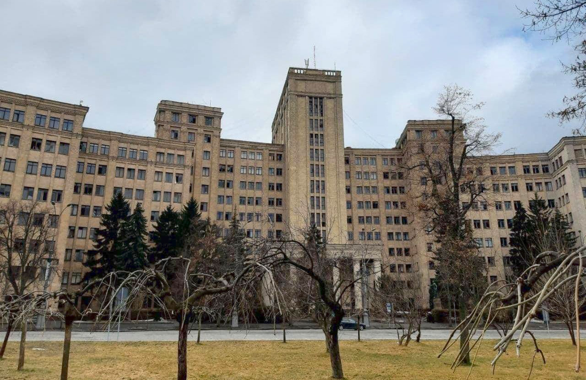
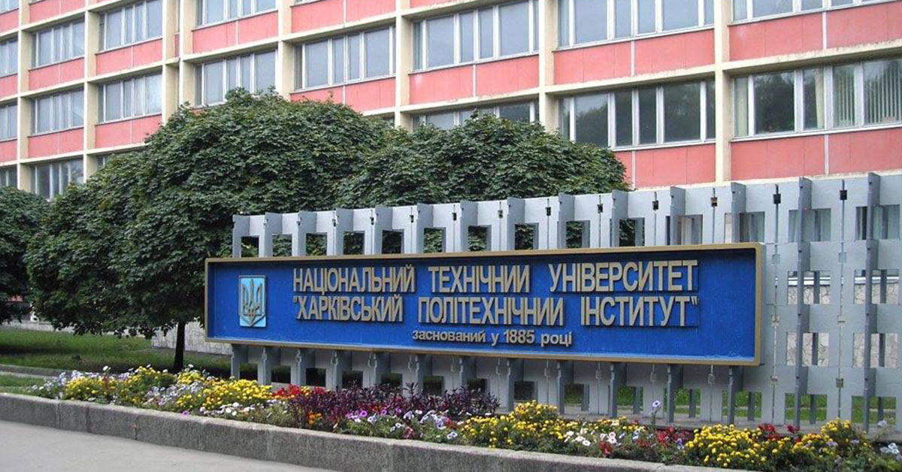
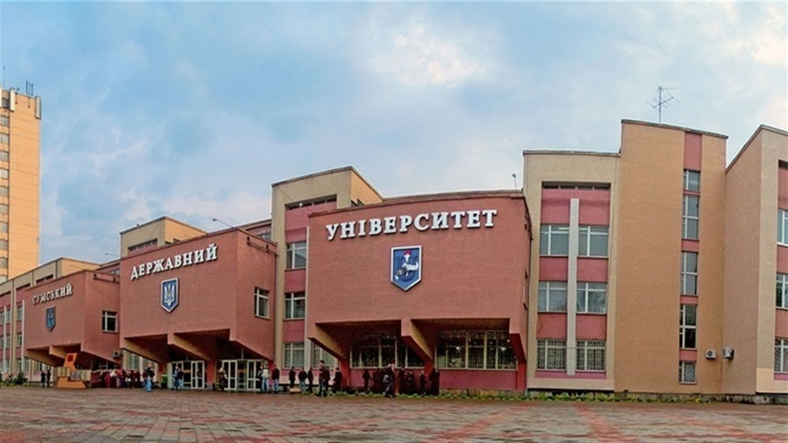
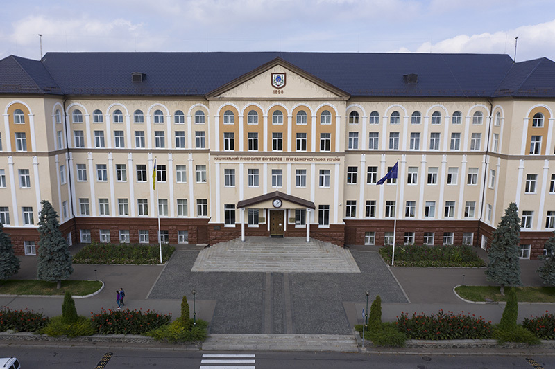
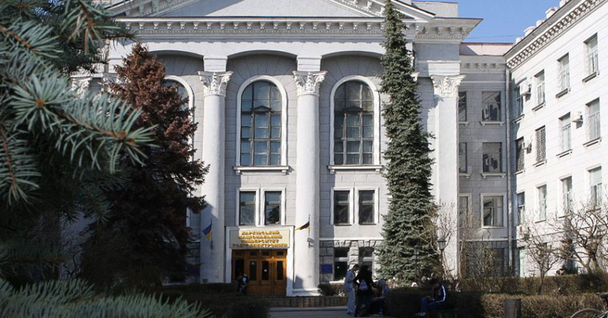

Київський Національний Університет

Це один з провідних університетів в Україні та один з найстаріших університетів у Східній Європі, заснований у 1834 році.
КНУ має широкий спектр академічних програм і факультетів, які охоплюють гуманітарні науки, природничі науки, соціальні науки,
інженерію, медицину та інші галузі. Університет пропонує програми бакалаврату, магістратури та докторантури.
Один з найбільш відомих факультетів КНУ - факультет кібернетики. Він відомий своїми сильними програмами з обчислювальної
математики, інформаційної кібернетики та штучного інтелекту. КНУ також відомий своєю академічною дослідницькою роботою,
особливо в галузі природничих наук та гуманітарних наук.
Університет має розвинуту наукову інфраструктуру, включаючи дослідні лабораторії, бібліотеки, наукові центри та інші
науково-освітні заклади. Студенти КНУ мають можливість брати участь у наукових дослідженнях та виконувати власні проекти.
Крім академічних досягнень, КНУ також має багатий студентський життя. Університет має численні студентські організації,
спортивні команди та культурні гуртки, які пропонують різноманітні заняття та заходи для студентів.
Національний технічний університет України "Київський політехнічний інститут імені Ігоря Сікорського"

Національний технічний університет України "Київський політехнічний інститут імені Ігоря Сікорського" (КПІ) є одним з найпрестижніших
технічних університетів в Україні та Східній Європі. Університет заснований у 1898 році і носить ім'я видатного українського
авіаконструктора Ігоря Сікорського.
КПІ має широкий спектр технічних та інженерних програм, таких як машинобудування, електротехніка, комп'ютерна інженерія,
енергетика, авіаційна техніка, радіоелектроніка, хімічна технологія та багато інших. Університет також пропонує програми в
галузі економіки, менеджменту та гуманітарних наук.
КПІ славиться своєю академічною та науковою репутацією. Він має ряд наукових інститутів, лабораторій та наукових центрів,
які займаються дослідженнями і розробками у різних галузях. Університет активно співпрацює з промисловістю та урядовими
організаціями, надаючи студентам можливість здобути практичний досвід і розвинути свої професійні навички.
Крім академічних досягнень, КПІ пропонує різноманітні студентські організації, спортивні команди, культурні гуртки та
студентські клуби. Університет організовує різноманітні заходи та фестивалі, що сприяють розвитку студентського життя та
сприяють творчому самовираженню студентів.
Харківський національний університет імені В.Н.Каразіна

Харківський національний університет імені В.Н. Каразіна (ХНУ) є одним з провідних університетів в Україні та одним з найстаріших університетів в Східній Європі. Він був заснований у 1804 році і названий на честь видатного українського вченого та педагога Володимира Науменка Каразіна.
ХНУ пропонує широкий спектр академічних програм у різних галузях знань. Університет має багато факультетів, включаючи гуманітарні науки, природничі науки, соціальні науки, медицину, інженерію, економіку та інші. Серед найпопулярніших напрямків навчання в ХНУ є мовознавство, філологія, фізика, математика, медицина, економіка та інформаційні технології.
Університет має високий рівень академічної та наукової роботи. ХНУ володіє великою науковою інфраструктурою, включаючи дослідні лабораторії, наукові центри та бібліотеки. Він також має багато наукових інститутів, які здійснюють дослідження в різних областях, включаючи фізику, біологію, хімію, мовознавство та інші.
ХНУ є центром міжнародної співпраці та обміну студентами. Університет підтримує академічні зв'язки з багатьма університетами та науковими установами по всьому світу.
Національний університет «Львівська політехніка»
Національний університет "Львівська політехніка" (ЛПУ) є одним з найпрестижніших технічних університетів в Україні. Він заснований у 1844 році і розташований у місті Львові, яке є культурним та освітнім центром країни.
ЛПУ пропонує широкий спектр академічних програм у галузях інженерії, технологій, архітектури та інших технічних дисциплін. Університет має різні факультети, включаючи факультети будівництва, машинобудування, електротехніки, інформаційних технологій, хімічних технологій та інші. Серед популярних спеціальностей є будівництво, комп'ютерні науки, енергетика, авіаційна техніка та автоматика.
ЛПУ славиться своєю академічною та науковою репутацією. Університет має висококваліфікований науковий персонал, проводить дослідження у різних галузях і вносить значний внесок у розвиток науки та технологій. Він також співпрацює з промисловістю та громадськими організаціями, надаючи студентам можливість здобувати практичний досвід та розвивати свої професійні навички.
ЛПУ має сучасну інфраструктуру, включаючи лабораторії, наукові центри, комп'ютерні класи та бібліотеки. Університет також пропонує студентам можливості для самовдосконалення та розвитку поза навчальними предметами.
Національний технічний університет «Харківський політехнічний інститут»

Національний технічний університет "Харківський політехнічний інститут" (ХПІ) є одним з провідних технічних університетів в Україні. Він був заснований у 1885 році і розташований у місті Харків, яке є важливим науковим та освітнім центром країни.
ХПІ пропонує широкий спектр академічних програм у галузях інженерії, технологій, комп'ютерних наук, економіки та багатьох інших. Університет має різні факультети, включаючи механічний, електротехнічний, інформаційних технологій, економічний та інші. Серед популярних спеціальностей є машинобудування, електротехніка, програмування, авіаційна техніка, економіка та менеджмент.
ХПІ має високий рівень академічної та наукової роботи. Університет займає провідні позиції в наукових дослідженнях та інноваційних розробках. Він має численні наукові лабораторії, науково-дослідні інститути та центри, що займаються дослідженнями у різних галузях, включаючи фізику, хімію, енергетику, інформаційні технології та інші.
ХПІ також відомий своєю співпрацею з промисловістю та урядовими організаціями.
Національний університет «Полтавська політехніка імені Юрія Кондратюка»

Полтавська політехніка імені Юрія Кондратюка (ППІ) є одним з провідних вищих навчальних закладів в Полтавській області, Україна. Університет названий на честь видатного українського вченого Юрія Кондратюка, який зробив значний внесок у космічну науку.
ППІ пропонує широкий спектр академічних програм у різних галузях знань, зосереджуючись переважно на інженерних, технологічних і природничих науках. Університет має різні факультети, включаючи факультети електроніки та інформаційних технологій, машинобудування, енергетики та автоматизації, архітектури та будівництва, економіки та менеджменту та інші. Серед популярних напрямків навчання в ППІ є комп'ютерна інженерія, електротехніка, механіка, будівництво та інші.
ППІ активно працює над розвитком науково-дослідної бази. Університет має власні наукові лабораторії, науково-дослідні центри та інститути, де здійснюються дослідження в різних сферах науки і технологій. Студенти та викладачі активно займаються науковими проектами, публікують наукові статті та беруть участь у конференціях та симпозіумах.
Львівський національний університет імені Івана Франка

Львівський національний університет імені Івана Франка (ЛНУ) є одним з провідних вищих навчальних закладів України та одним із найстаріших університетів у Східній Європі. Він знаходиться у місті Львові, що є культурним, науковим та освітнім центром Західної України.
Університет був заснований у 1661 році як єзуїтський колегіум і носив різні назви протягом своєї історії. У 1879 році він отримав статус університету і був названий на честь відомого українського письменника Івана Франка, який був активним учасником українського національного відродження.
Львівський національний університет імені Івана Франка пропонує широкий спектр академічних програм у різних галузях знань. Він має 18 факультетів, де навчається понад 30 000 студентів. Факультети включають гуманітарні, природничі, соціальні та технічні науки, медицину, фізичне виховання та спорт, економіку та інші.
Університет має значні наукові досягнення і відомий своїми дослідженнями. Він має велику наукову бібліотеку, музеї, лабораторії та інші наукові заклади, які сприяють академічному розвитку.
Сумський державний університет (СумДУ)

Сумський державний університет (СумДУ) є одним з провідних вищих навчальних закладів в Україні, розташованим у місті Суми. Заснований у 1948 році, він набув статусу університету у 1993 році.
СумДУ пропонує широкий спектр академічних програм у різних галузях знань, включаючи гуманітарні, природничі, технічні, соціальні та економічні науки. Університет має 17 факультетів, де навчається близько 20 000 студентів. Крім того, СумДУ надає можливості для аспірантури та докторантури.
Один з основних пріоритетів СумДУ - це якісна освіта і наукові дослідження. Університет має сучасну матеріально-технічну базу, наукові центри, лабораторії та бібліотеку, які сприяють академічному розвитку. Викладачі та науковці СумДУ активно займаються дослідженнями в різних галузях і приймають участь в наукових проектах.
СумДУ також активно співпрацює з іншими університетами та науковими установами у межах наукового та освітнього співробітництва. Університет має велику кількість міжнародних партнерів і організовує обмін студентами та викладачами, що сприяє культурному та науковому обміну з іншими країнами.
Національний університет біоресурсів і природокористування України

Національний університет біоресурсів і природокористування України (НУБіП України) є провідним вищим навчальним закладом, спеціалізованим у сфері аграрних наук, біологічних ресурсів, екології та природокористування. Університет був заснований у 1898 році і має багатий науковий та академічний доробок.
Головна мета НУБіП України полягає в підготовці фахівців у сфері сільського господарства, лісівництва, ветеринарної медицини, екології, біотехнологій та інших галузей, пов'язаних з природокористуванням і сталою екологічною розвитком. Університет пропонує широкий спектр бакалаврських, магістерських та докторських програм.
НУБіП України має кілька факультетів, включаючи агрономічний, лісотехнічний, зоотехнічний, ветеринарної медицини, екологічний, біотехнологічний, гуманітарний та інші. Крім того, університет має наукові центри, лабораторії та дослідні станції, де проводяться наукові дослідження та розробки.
Наукова робота в НУБіП України орієнтована на вирішення актуальних проблем у сфері аграрних наук, біологічних ресурсів та екології. Університет активно займається науковими проектами, публікаціями наукових статей та організацією наукових конференцій і семінарів.
Харківський національний університет радіоелектроніки

Національний університет біоресурсів і природокористування України (НУБіП України) є провідним вищим навчальним закладом, спеціалізованим у сфері аграрних наук, біологічних ресурсів, екології та природокористування. Університет був заснований у 1898 році і має багатий науковий та академічний доробок.
Головна мета НУБіП України полягає в підготовці фахівців у сфері сільського господарства, лісівництва, ветеринарної медицини, екології, біотехнологій та інших галузей, пов'язаних з природокористуванням і сталою екологічною розвитком. Університет пропонує широкий спектр бакалаврських, магістерських та докторських програм.
НУБіП України має кілька факультетів, включаючи агрономічний, лісотехнічний, зоотехнічний, ветеринарної медицини, екологічний, біотехнологічний, гуманітарний та інші. Крім того, університет має наукові центри, лабораторії та дослідні станції, де проводяться наукові дослідження та розробки.
Наукова робота в НУБіП України орієнтована на вирішення актуальних проблем у сфері аграрних наук, біологічних ресурсів та екології. Університет активно займається науковими проектами, публікаціями наукових статей та організацією наукових конференцій і семінарів.
Дніпровський національний університет імені Олеся Гончара
Чернівецький національний університет імені Юрія Федьковича
Дніпровський національний університет імені Олеся Гончара (ДНУ) є провідним вищим навчальним закладом у місті Дніпро, Україна. Університет був заснований у 1918 році і названий на честь видатного українського письменника Олеся Гончара.
ДНУ має широкий спектр академічних програм у різних галузях знань, включаючи гуманітарні, природничі, технічні, економічні та інші спеціальності. Університет пропонує бакалаврські, магістерські та докторські програми з метою підготовки висококваліфікованих фахівців у різних галузях.
Основні факультети ДНУ включають факультети гуманітарних наук, природничих наук, технічний факультет, економічний факультет, факультет управління та бізнесу, факультет права та багато інших. Університет також має наукові центри, лабораторії та дослідні інститути, де проводяться наукові дослідження та розробки.
ДНУ активно співпрацює з науковими установами, промисловими партнерами та міжнародними організаціями з метою розвитку науково-дослідної роботи та впровадження нових технологій. Університет організовує наукові конференції, семінари та інші заходи для сприяння обміну науковими знаннями та співпраці між вченими.
Чернівецький національний університет імені Юрія Федьковича

Чернівецький національний університет імені Юрія Федьковича (ЧНУ) є одним з провідних вищих навчальних закладів у Західній Україні. Він був заснований у 1875 році і названий на честь видатного українського поета, письменника і громадського діяча Юрія Федьковича.
Чернівецький національний університет пропонує широкий спектр академічних програм у різних галузях знань, включаючи гуманітарні, природничі, соціальні, економічні та технічні науки. Університет має факультети філології, історії, філософії та права, математики та інформатики, природничих наук, економіки, туризму та інші.
Окрім академічних програм, ЧНУ активно займається науковою діяльністю та дослідженнями. Університет має ряд наукових центрів, інститутів та лабораторій, де проводяться дослідження в різних галузях знань. Співпраця з інших наукових установ, включаючи наукові центри та університети з інших країн, також є важливою частиною діяльності ЧНУ.
Чернівецький національний університет має розгалужену студентську спільноту, яка активно бере участь у різних культурних, спортивних та наукових заходах. Університет організовує студентські конференції, фестивалі, виставки та інші заходи для підтримки творчого розвитку студентів.
Джерело інформації даних університетів - Osvita.ua
На головну сторінку